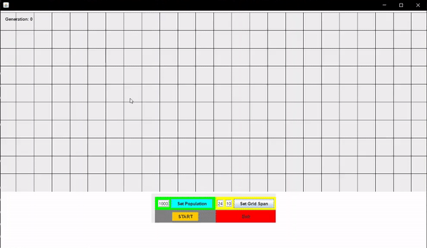
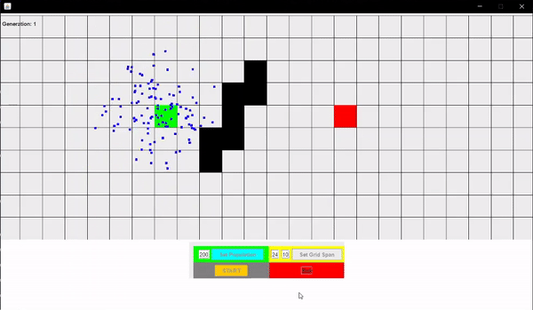
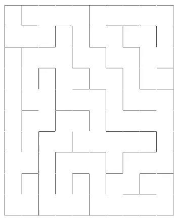
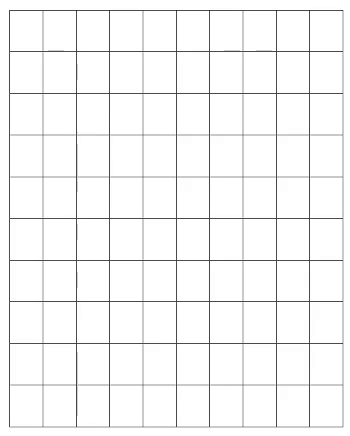

An evolutionary-based approach on finding a valid path from a start and end node on a grid. This project highlights Darwin's Theory of Natural Selection and implements this through a distance-based fitness that passes each object's coordinates down to the next generation. Movement is implemented through vectors that are constructed from a certain, allowed, distance and angles.
 Translation of languages on your personal computer's current screen from a specified language to another specified language. This was developed in Java with Maven to incorporate certain dependencies, Tess4J, a JNA wrapper for Tesseract, and the Google Cloud Platform, specifically Google Translation API, to send in captured text to be translated. This program will prompt a transparent JWindow onto the user's screen and create bounding boxes that contain text the user wants to translate. This is where Tess4J comes in, it performs OCR on the bounding box area, get the untranslated text, send it to the Translation API, get the translated results, then redisplays it on the JWindow.
A Java approach to simulating Virutal Memory, specifically Caching with a Page Table and Translation Lookaside Buffer through Virutal addresses and Page Numbers. This program utilies JavaFX to design the TLB and Page Table, where we check the TLB Cache for a user-entered virtual address, parse its VPN, look-up the tag in the TLB, and if found, there is no need to go to Page Table, but if not found, goes to the Page Table, and from there decides whether we need to fetch the cotents from the Disk memory. Ejection of the TLB Cache follows LRU policy.
A Java GUI that showcases DFS and recursive backtracking by generating a maze.
 